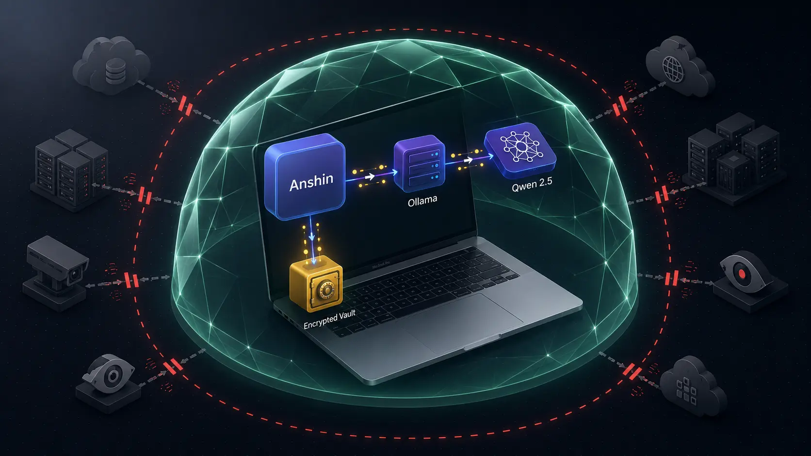

Verifiable Architectural Zero-Trust
Anshin makes zero outbound network calls during normal use. No analytics. No telemetry. No accounts. No cloud databases. Your thoughts, CBT records, and reflections stay encrypted on your Mac. Don't take our word for it — verify it yourself in 90 seconds.
The Architecture: The Air-Gap Is Real
Physical isolation enforced at the network protocol and macOS kernel level.

During every session after initial setup, Anshin talks exclusively to http://127.0.0.1:11434. That is Ollama running locally on your machine. The packets never leave your Mac's internal loopback interface (lo0) and never touch Wi-Fi, Ethernet, or your ISP router.
Hard-Coded Content Security Policy (CSP):
connect-src 'self' ipc: http://ipc.localhost http://localhost:11434 http://127.0.0.1:11434No external domains. No CDNs. No third-party SDKs. No crash reporters. The WebKit engine inside Anshin refuses remote network calls at the operating system level.
Verify It Yourself (90 Seconds, No Special Tools)
Choose any of the 4 independent verification methods below.
Run our open-source POSIX verification script to automatically monitor non-loopback packets while you use Anshin:
git clone https://github.com/sv26000/anshin-privacy-audit.git
cd anshin-privacy-audit
chmod +x scripts/verify-network.sh
./scripts/verify-network.sh
The script listens on your active network adapter for 60 seconds, filters out loopback (127.0.0.0/8), and proves zero packets are attributed to Anshin.
- Open Anshin and start a conversation or open a CBT thought record.
- Open Activity Monitor (via Spotlight:
Cmd + Space→ Activity Monitor). - Click on the Network tab at the top.
- Filter by Anshin and monitor the Sent Bytes and Rcvd Bytes columns.
- Send prompts and log mood entries. The bytes counter stays at 0 B. IPC traffic to Ollama on
127.0.0.1is internal loopback and does not route through your network card.
Watch every single outbound packet leaving your Mac, explicitly excluding local loopback:
sudo tcpdump -i any -n 'not (src net 127.0.0.0/8 or dst net 127.0.0.0/8)' \
and host $(scutil --get LocalHostName 2>/dev/null || echo localhost)Use Anshin for an entire session. The packet terminal remains completely empty.
Install LuLu (free, open-source firewall for macOS by Objective-See) or Little Snitch. Configure it to alert on every outbound connection attempt. Launch Anshin.
The only alert you will ever see is during initial first-launch setup when Ollama downloads the Qwen 2.5 model weights. After that, zero socket prompts will ever appear.
Product & Architecture Decision Records (ADRs)
The engineering rationale behind every privacy, security, and economic choice.
ADR-001: 100% On-Device Inference via Local Qwen 2.5 on Apple Silicon Accepted
Rationale: Cloud LLMs (OpenAI, Anthropic) require transmitting sensitive mental health disclosures across the internet and incurring ongoing API fees. By executing Qwen 2.5 locally on Apple Silicon's Neural Engine and Unified Memory via Ollama, Anshin achieves sub-second latency, zero cloud costs, and true air-gapped privacy.
ADR-002: Zero Telemetry, Zero Analytics, and Zero Crash Reporting Accepted
Rationale: Product analytics (PostHog, Mixpanel) and crash SDKs (Sentry) routinely leak psychological metadata, timestamps, and stack traces containing user prompts. Anshin ships with zero third-party telemetry SDKs, earning Apple's official “Data Not Collected” rating.
ADR-003: Local Database Encryption via AES-256-GCM and Argon2id KDF Accepted
Rationale: Storage on disk is protected against physical theft and forensic extraction using authenticated AES-256-GCM encryption with Argon2id memory-hard key derivation, isolated inside Apple's sandboxed container directory (~/Library/Containers/com.anshin.app/Data/).
ADR-004: $39 One-Time Purchase vs. Monthly SaaS Subscription Model Accepted
Rationale: Because local inference incurs $0.00 in per-query cloud server costs, Anshin rejects predatory monthly subscriptions ($120–$300/yr). Users pay a single $39 one-time fee on the Mac App Store, saving $320–$860 over three years.
ADR-005: Evidence-Based Clinical Frameworks (CBT/ACT) vs. Unconstrained Chat Accepted
Rationale: Unconstrained conversational AI encourages sycophancy (validating irrational negative schemas) and ruminative loops. Anshin grounds all AI guidance in proven frameworks: 5-column Thought Records (Beck, 1979), 10 Cognitive Distortions (Burns, 1980), and Acceptance & Commitment Values Compass (Hayes, 1999).
Competitive Architecture & Privacy Comparison
Architectural Zero-Trust vs. Policy-Based Trust.
| Architecture Dimension | Anshin (macOS) | Wysa / Woebot | Rosebud AI | Day One | ChatGPT Plus |
|---|---|---|---|---|---|
| Trust Model | Architectural Zero-Trust | Policy-Based Trust | Policy-Based Trust | Policy-Based Trust | Policy-Based Trust |
| AI Inference | 100% On-Device (Apple Silicon) | Cloud Servers (AWS) | OpenAI / Anthropic APIs | None / Cloud Search | OpenAI Data Centers |
| Outbound Network Traffic | 0 calls (127.0.0.1 Loopback) | Continuous API calls | Continuous API calls | Cloud sync calls | Continuous streaming |
| On-Disk Encryption | AES-256-GCM + Argon2id | Cloud database keys | Server-side SaaS keys | Cloud sync encryption | Server-side at rest |
| User Accounts Required | Zero (No email or phone) | Mandatory account | Mandatory account | Mandatory account | Mandatory account |
| Works 100% Offline | Yes (Airplane Mode) | No (Fails offline) | No (Fails offline) | Text only | No (Fails offline) |
| Apple Nutrition Label | Data Not Collected | Collects diagnostics | Collects user content | Collects diagnostics | Collects user data |
| Pricing | $39 One-Time | $120 – $300 / year | $156 – $240 / year | $35 / year | $240 / year |
Detailed comparative writeup available in docs/comparison-matrix.md.
STRIDE Threat Model & Subpoena Immunity
Formal cryptographic analysis of attack vectors and legal disclosures.
Subpoena & Government Discovery Immunity
When law enforcement or civil litigants issue a subpoena to a cloud mental health company (such as Wysa, Woebot, or OpenAI), the company must extract database rows and chat transcripts. Because Anshin maintains no servers, no accounts, and zero cloud backups, we possess zero keys and zero data. It is physically and cryptographically impossible to comply with a demand to produce data that does not exist.
Third-Party Vendor Breach Resilience
Even if major cloud providers, analytics vendors, or AI model APIs suffer a catastrophic breach, Anshin users remain 100% uncompromised because zero external SDKs or APIs are integrated into the binary.
Machine-Readable Discovery for AI Crawlers
Standards-compliant feeds for Generative Engine Optimization (GEO).